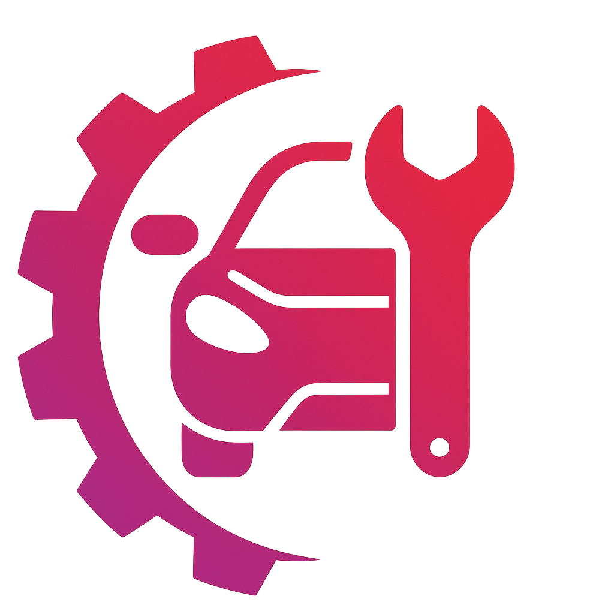

Pozvánka od servisu
Propojení potvrďte ve své aplikaci SprávaVozidel.
Otevřít pozvánky v aplikaciJak pokračovat
- Přihlaste se e-mailem, na který vám pozvánka přišla.
- V části Profil → Pozvánky servisů zkontrolujte název servisu.
- Pozvánku přijměte, nebo odmítněte.
Servis získá váš kontakt až po potvrzení. Přístup ke konkrétním vozidlům a jejich historii schvalujete samostatně.
Pokud se aplikace neotevře, spusťte ji z plochy iPhonu. Účet zatím nemáte? Zaregistrujte se v aplikaci stejným e-mailem a ověřte jej. Pro informace o instalaci kontaktujte podporu.